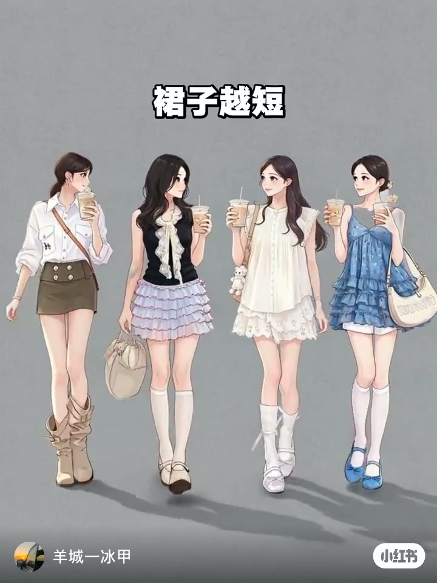
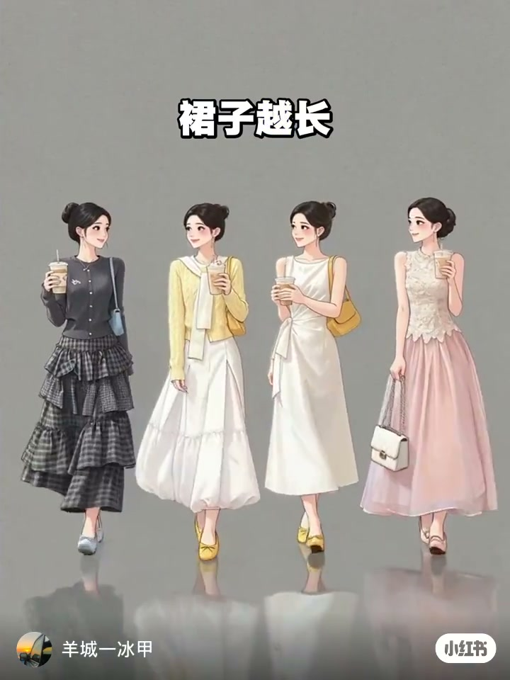
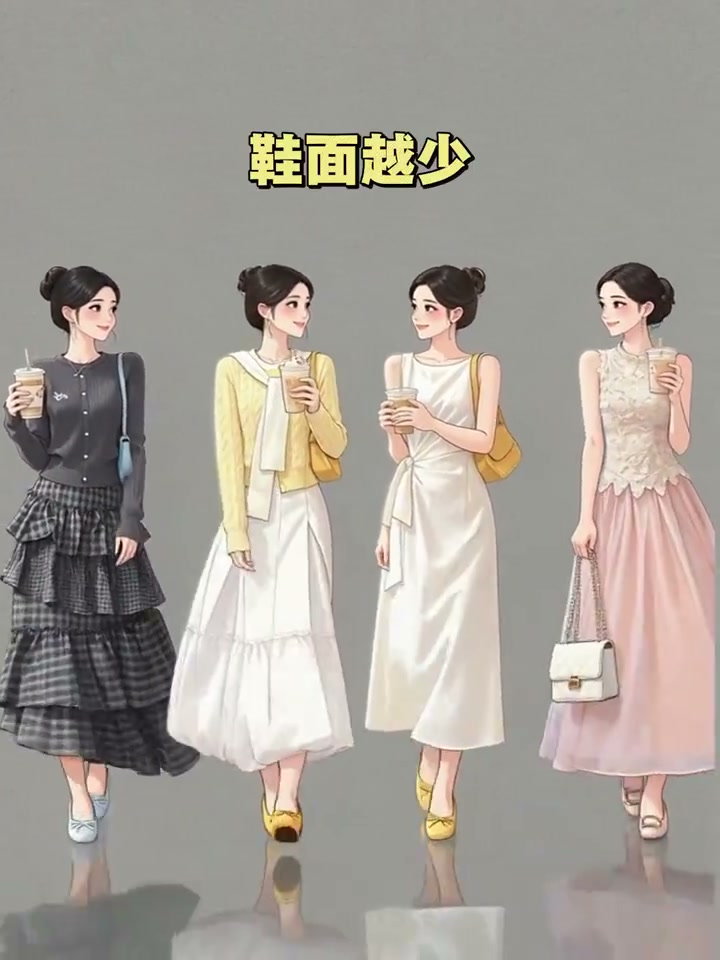
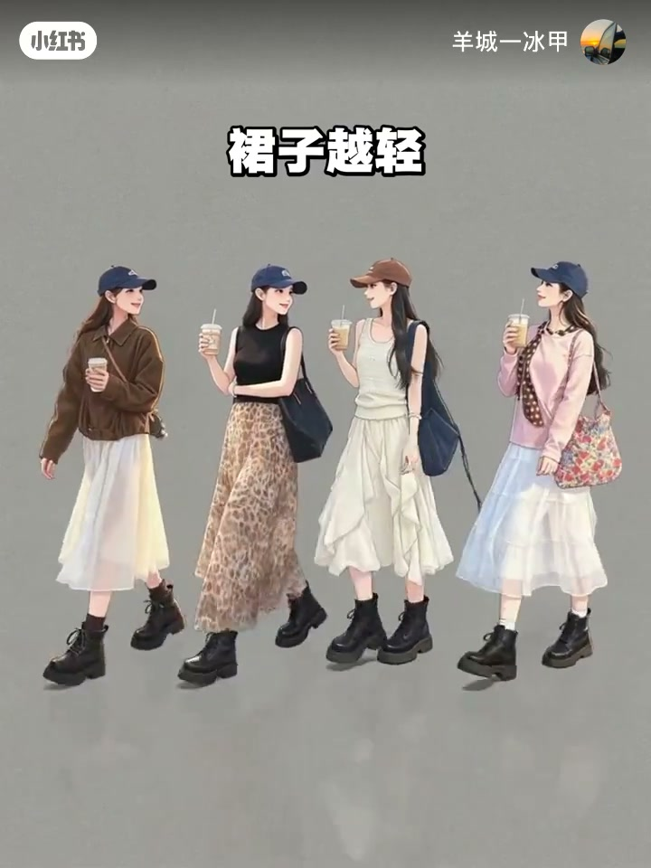
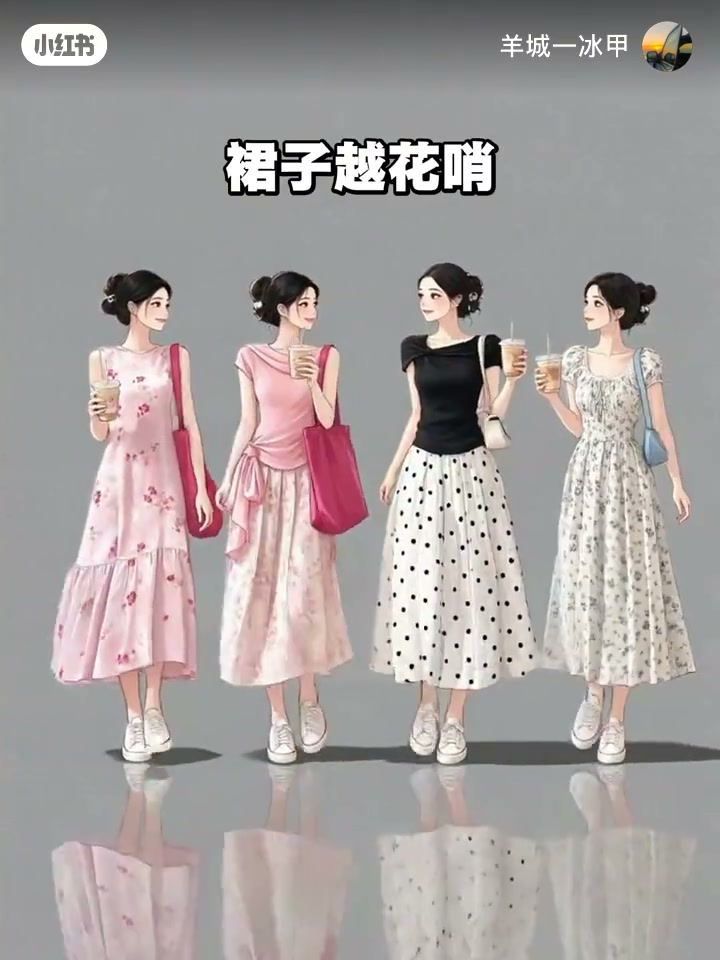
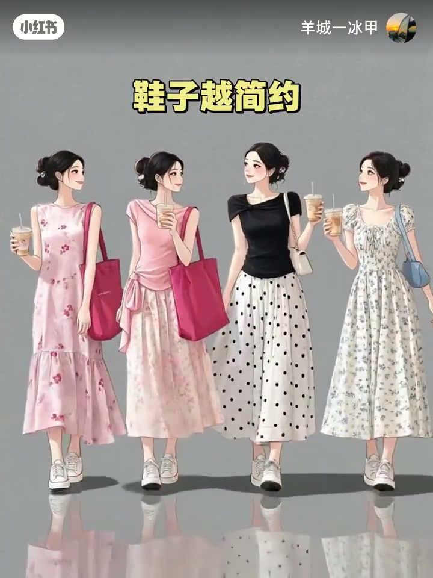
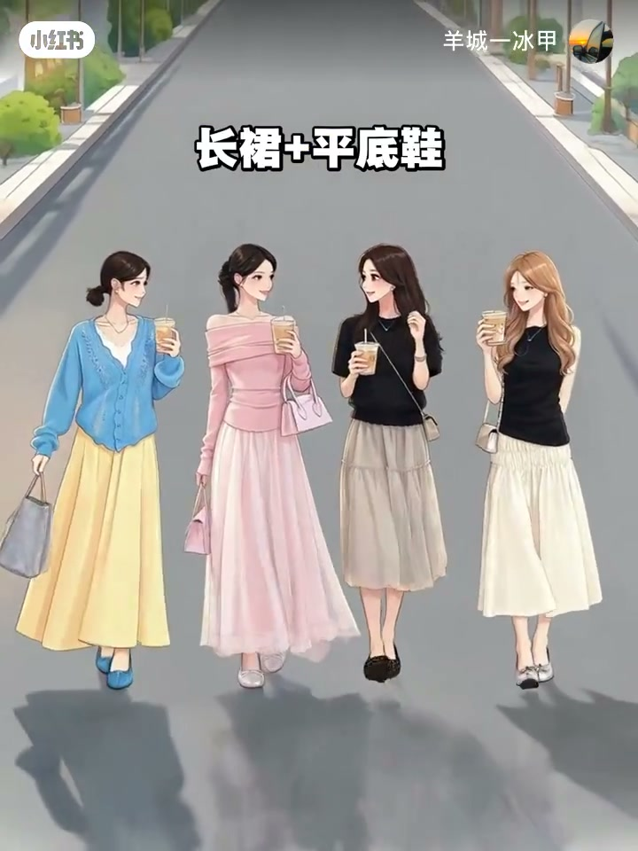
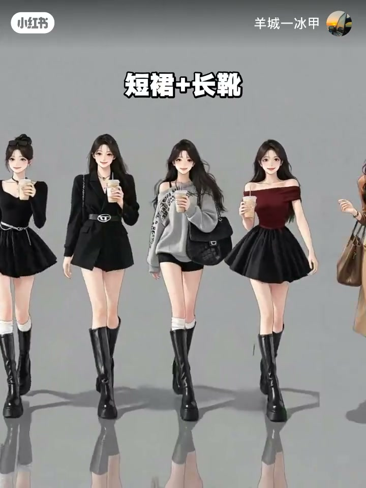

内容要点
一段 21 秒的穿搭口诀。上半段五个「越…越…」原则：裙子越短鞋面越多、裙子越长鞋面越少、裙子越紧鞋跟越细、裙子越轻鞋体越重、裙子越花哨鞋子越简洁——核心是裙型与鞋履的轻重、繁简、视觉量感匹配。下半段给出四种裙型的具体配鞋方案：长裙配平底鞋、短裙配长靴、开叉裙配高跟鞋、碎花裙配小白鞋。
知识结构
裙子越短鞋面越多、裙子越长鞋面越少——裙长与鞋的露肤/量感互补。
裙子越紧鞋跟越细、裙子越轻鞋体越重——松紧轻重互补。
裙子越花哨鞋子越简洁——繁简互衬。
长裙配平底鞋、短裙配长靴、开叉裙配高跟鞋、碎花裙配小白鞋。
裙鞋搭配=视觉量感与繁简的互补匹配：短裙露肤多配量感足的鞋、长裙配轻量平底鞋；紧身裙配细跟、轻飘裙配重感鞋；花哨裙子配极简鞋。具体方案：长裙→平底、短裙→长靴、开叉裙→高跟、碎花裙→小白鞋。
00:00-00:13口诀上：五条量感与繁简原则
前五句都是「越…越…」的搭配律：「裙子越短，鞋面越多；裙子越长，鞋面越少」——裙长决定了鞋的存在感，短裙多露腿需要鞋子做足视觉量感，长裙包裹性强则让鞋退居其次。
「裙子越紧，鞋跟越细；裙子越轻，鞋体越重；裙子越花哨，鞋子越简洁」——紧配细、轻配重、花配简，三条都是互补原则：让裙子与鞋形成视觉上的平衡与反差。




00:13-00:21口诀下：四种裙型的配鞋方案
后半段把原则落到具体搭配：长裙配平底鞋——长裙轻盈流畅，平底鞋保持整体的轻量统一。
短裙配长靴——短裙露肤多，长靴补足下半身量感，又飒又平衡。开叉裙配高跟鞋——开叉本身带女人味，高跟鞋延长腿部线条与之呼应。碎花裙配小白鞋——碎花已是视觉重点，小白鞋负责清新简洁不抢戏。




完整转录（9段）
以下文本由 Whisper medium 模型自动转录，可能存在少量识别误差，已尽可能修正。
裙子越短 鞋面越多
裙子越长 鞋面越少
裙子越紧 鞋根越细
裙子越轻 鞋体越重
裙子越花少 鞋子越简越
长裙配平底鞋
短裙配长靴
开叉裙配高跟鞋
碎花裙配小白鞋